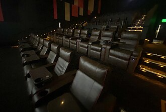

A few facts about the world where the imagination can't be stopped.

Cinema is not only about making people dream. It's about changing things and making people think. Cinema should make you forget you are sitting in a theater.
Cinema can fill in the empty spaces of your life and your loneliness.
About the Films
The first cinemas were opened in the early 1900s. Before then, films were shown in public halls, theatres or at funfairs!
Movies used to be recorded on film and were then shown to audiences by being run through a projector on reels. Nowadays, the process is all digital, with smaller cameras and digital projectors in cinemas.
Films were originally made without sound. Known now as ‘silent movies,’ when they were shown there was often a live piano player, organist or small group of musicians present to add atmosphere.
When films began to be made with sound, they were known as ‘talkies.’ The first film to be made with sound is called ‘The Jazz Singer’ and it was made in 1927.
Films were originally made in black and white. Although many filmmakers experimented with colour, the first successful use of it was in the very famous 1939 film ‘The Wizard of Oz.’ The film starts in black and white and then changes into stunning technicolour when Dorothy arrives in Oz.
Top 3 technologies which were introduced by Cinema